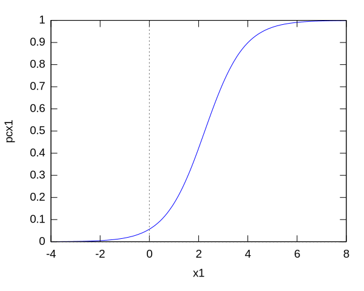
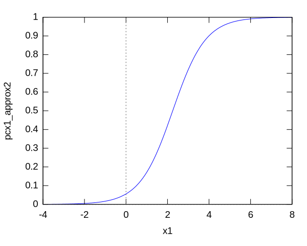
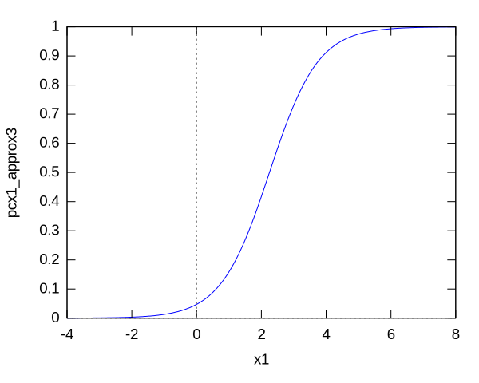
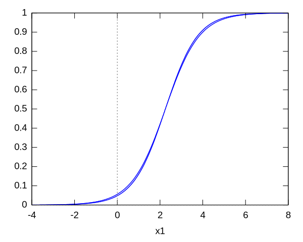
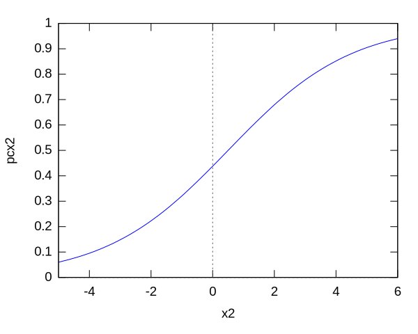
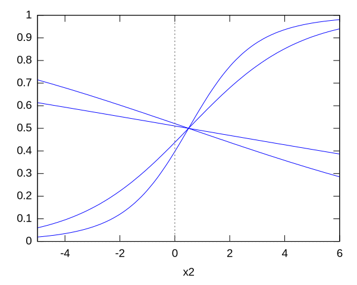

class: center, middle # Strategies for handling missing data in modeling and prediction ## Robert Dodier This document and associated material is on Github: [robert-dodier/pdxml-missing-data](https://github.com/robert-dodier/pdxml-missing-data) --- # What are missing data? -- * Datum = assignment of a specific value to a variable -- * Record = tuple of data associated with a specific subject or experimental unit -- * Missing data = data for which the specific value is unknown -- * Example: (age = 72, gender = male, height = ?, smoking = ?) --- ## Common scenarios, #1: missing data in prediction -- * ML models typically compute something like `\(P(y \mid x_1, x_2, x_3, \ldots)\)` -- * What if some `\(x_k\)` is unknown? -- * Need to somehow compensate for `\(x_k\)` with variables which are present -- * Spoiler alert! Right thing to do is to average over possible values --- ## Common scenarios, #2: missing data in training -- * "Training" == adjusting parameters to better fit available data -- * Data typically == list of tuples of variables `\((x_1, x_2, x_3, \ldots, y)\)` -- * Each tuple makes some contribution to the overall goodness of fit -- * How to compute the contribution when some tuples have missing values? -- * Spoiler alert! Again, right thing to do is to average over possible values --- ## A Bayesian framework for approaching missing data problems -- * "Bayesian" = model all uncertainties as probabilities -- * consistent strategy: compute conditional probability given what you know, and averaging over what you don't know -- * Averaging means integrating -- this can be computationally intensive -- * ... but you always know what you're aiming for --- # Applying the Bayesian framework -- * When some `$x$`'s are missing, and some are present, our goal is to find `\(P(y \mid \mathrm{present})\)` -- * Given a model `\(P(y \mid \mathrm{missing}, \mathrm{present})\)` -- * we find `\(P(y \mid \mathrm{present})\)` by averaging over the missing variables: integrate `\(P(y \mid \mathrm{missing}, \mathrm{present}) P(\mathrm{missing}\mid \mathrm{present})\)` over missing -- * Key part of puzzle `\(P(\mathrm{missing} \mid \mathrm{present})\)`, i.e. model of the relationship of missing and present --- # Advanced topics for missing data -- * Informative missingness -- * Uninformative — "missing completely at random" -- * Missing conditional on other variables ⇒ "informative" missingness -- * Value of information — measured in bits -- * If you could observe an additional variable, which one? -- * Graphical models -- * Bayesian (directed) and Markov (undirected) networks --- # Solutions derived from the general framework -- * Prediction: integrate output over missing variables -- --- # Solutions derived from the general framework * Training: integrate likelihood term over missing variables -- * Maximum likelihood estimation. Log likelihood with complete data looks like: `\(\log P(y_1\mid x_{1,1}, x_{1,2}) + \ldots + \log P(y_n\mid x_{n,1}, x_{n,2})\)` -- * Missing data: replace `$k$`'th term with `\(\log \int P(y_k\mid x_{k,1}, x_{k,2}) P(x_{k,2}\mid x_{k,1}) dx_2\)` -- * log-integral-likelihood causes trouble — not same as integral-log-likelihood -- * Expectation-maximization (EM) algorithms can help here --- # Looking at conventional heuristics from a Bayesian point of view -- ## Single imputation * replace missing value with per-variable mean or most common value -- * something like approximating integral with one-point sample --- ## Multiple imputation * sample from marginal distribution -- * sample from distribution conditional on other variables -- * multiple imputation is essentially same as Bayesian approach --- ## "Hot deck" imputation -- replace with most similar complete record -- * something like sampling from empirical conditional distribution --- ## Multiple models -- * Don't try to use all data to train the same model -- * Instead, train one model per combination of missing variables -- * Equivalent to constructing conditional distributions `\(P(y \mid x_1, x_3)\)`, `\(P(y\mid x_2, x_3)\)`, etc directly -- * Workable when not too many patterns of missing variables! --- # Worked example: missing variable in classification -- * Model is `\(P(c\mid x_1, x_2) = \sigma(x_1, x_2)\)` -- * where `\(\sigma(x_1, x_2) = 1/(1 + \exp(-u(x_1, x_2)))\)` is the "sigmoid" function -- * and `\(u(x_1, x_2) = a_1 x_1 + a_2 x_2 + b\)` * Let `$a_1 = 4/3, a_2 = -1/6, b = -35/12$` -- * Class 0 has mean `$\mu_0 = (1, 0)$`, class 1 has mean `$\mu_1 = (7/2, 1)$` * Same covariance `$\Sigma = (2, 1; 1, 2)$` --- # Worked example: missing variable in classification  --- # Worked example: missing variable in classification  --- # Worked example: missing variable in classification * With both variables present, we compute `\(P(c = 1\mid x_1, x_2)\)` * Suppose `\(x_2\)` is missing * Now we must compute `\(P(c = 1\mid x_1)\)` --- # Worked example: missing variable in classification * Gold-standard result: integrate output over missing variable weighted by `\(P(x_2\mid x_1)\)`. -- `\(P(c=1\mid x_1) = {{e^{{{7\,{\it x_1}}\over{4}}+{{1}\over{4}}}}\over{e^{{{7\, {\it x_1}}\over{4}}+{{1}\over{4}}}+e^{{{{\it x_1}}\over{2}}+{{49 }\over{16}}}}}\)` --- # Worked example: missing variable in classification * Gold-standard result: integrate output over missing variable weighted by `\(P(x_2\mid x_1)\)`.  --- # Worked example: missing variable in classification * Simpler result #1: integrate output over missing variable weighted by `\(P(x_2)\)`. --- # Worked example: missing variable in classification * Simpler result #2: replace `$x_2$` by its mean value conditional on `$x_1$`.  --- # Worked example: missing variable in classification * Simplest result: replace `$x_2$` by its unconditional mean value.  --- # Worked example: missing variable in classification * Gold standard and all approximations:  --- # Worked example: missing variable in classification * Repeat the analysis, this time suppose `$x_1$` is missing. Gold standard:  --- # Worked example: missing variable in classification * Gold standard and approximations, `$x_1$` missing:  --- # Worked example: missing variable in classification * When the less important variable, `$x_2$`, is missing, all approximations are fairly accurate -- * When the more important variable, `$x_1$`, is missing, results vary widely * Substituting conditional mean gives more accurate result * Substituting unconditional distribution or mean gives very inaccurate results --- # Missing values are everywhere --- # Missing values are everywhere * Text analysis: parameters are associated with words, but most documents don't contain most words -- * Example: Happy words = (smile, glad, joy, goal, win), unhappy = (forgot, grumble, complain); what about the text "I was glad that the roof got fixed"? -- * Models for text are often so-called latent variable models; for these, missing data might have no effect (depending on structure of model) — good news! --- # Missing values are everywhere * Time-to-event models: death, failure, cancel service, etc -- * For subjects which haven't experienced the event you know only that time to event is greater than current age -- * It's typically important to take non-event data into account, so exact formulas have been worked out --- # Missing values are everywhere * Pooling data from various sources, for some cases all data are available, but some sources not available for all cases -- * Example: medical diagnosis; data sources = test results, demographics, personal report, recent and not-recent medical records, educational records, etc -- * If it's important to account to account for each and every datum, a Bayesian network might be appropriate